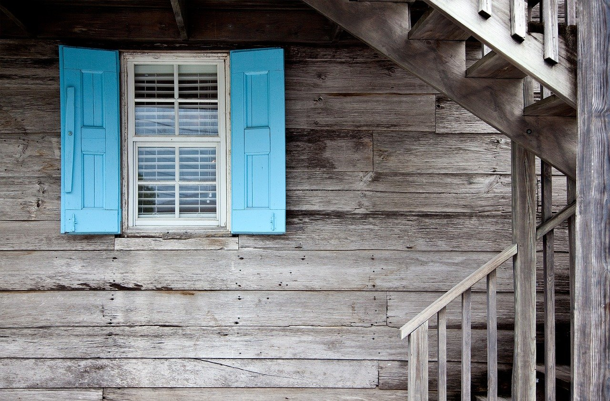

Made for Arizona
Suited for Tucson and southern Arizona.
Wood shutters, blinds, and shades for southern Arizona windows.

Desert Wind Shutters makes wood plantation shutters, blinds, shades, and faux shutters for homes and businesses in Tucson.
We craft elliptical louver shutters and provide O’Hair and Hunter Douglas custom shutters. Visit us on North Oracle Road to see options for any window.
Suited for Tucson and southern Arizona.
Shutters, blinds, and shades.
Based on North Oracle Road.
Window shutters made from wood.
Shutters with elliptical louvers.
Shutters from O’Hair.
Shutters from Hunter Douglas.
Window blinds, shades, and verticals.
Window shutters made from alternative materials.
Tap a photo to enlarge it.
Desert Wind Shutters
A sketch of the streets around the shop, not to scale. For exact directions, use the map below or open it in Google Maps.
Stop by on North Oracle Road to see the options for your windows.